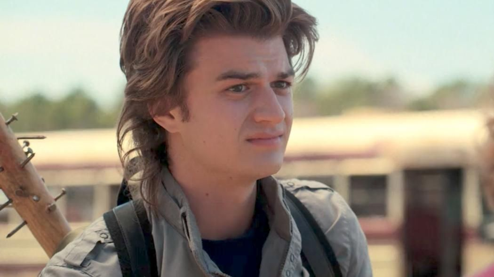

Steve Harrington is a fictional character from the Netflix television show Stranger Things, portrayed by Joe Keery. While starting out as a typical unlikable jock, Steve has grown into a more protecting and caring character as the show has progressed, a development that has received widespread acclaim from critics and fans alike and has led to him becoming one of the show’s most beloved and enduring characters. Initially a part of the recurring cast, Keery was promoted to the main cast in the second season. Steve is a side antagonist turned protagonist at the end of season 1, and one of the main protagonists of season 2, season 3, and season 4.
Content from Wikipedia for Season 1.
Content from Wikipedia for Season 2.
Learn more about Steve Harrington on his Wikipedia page.